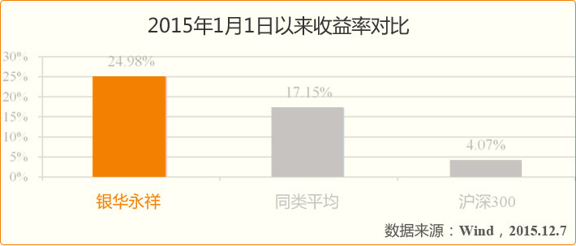
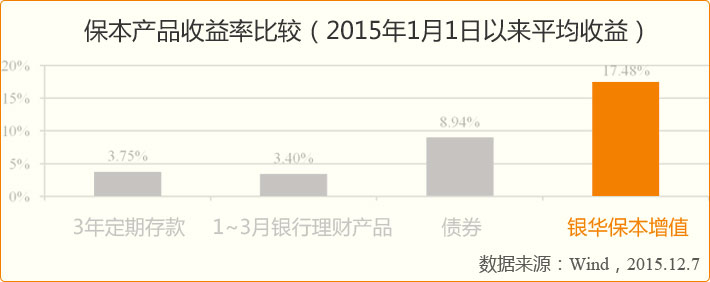
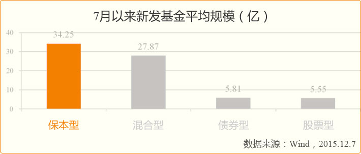
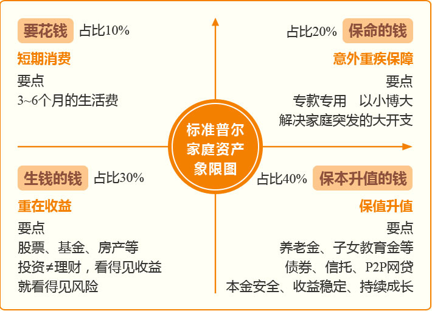

银华保本增值是市场上第一支叫“保本”的基金，于2004年3月2日成立，距今11年历史，累计涨幅 127.16% 。
贾鹏 先生
北京大学经济学硕士，香港大学金融学硕士；
历任瑞银证券研究组长，建信基金基金经理助理；
目前担任银华保本增值、永祥保本、银华中证转债、银华信用双利基金的基金经理。
（1）基金经理业绩优秀
2014年9月12日-2015年12月7日，贾鹏接任以来银华保本增值收益率为15.71%。
其管理的另一只保本类产品银华永祥保本，截至12月7日，今年以来收益达24.98%，远高于同类产品17.15%的收益，在同类44只产品中排名第6。

（2）基金经理股债双通
相对其它保本基金经理仅对债券单一的研究和投资背景，本基金基金经理贾鹏具有宏观经济、消费品、TMT等多个行业研究和投资的复合背景，在管理保本基金时债券投资精准稳健，股票投资更胜一筹。
今年市场波动大，震荡市中保本型基金业绩稳健，为投资者宠爱品种。

7月以来，对比新发产品平均发行规模，保本基金受青睐程度大。。

银华保本增值基金采用双重保障制度，政策保障和技术保障。
政策保障：由商业银行、保险公司、担保公司等金融机构对本基金进行担保。一旦出现亏损由第三方承担。
技术保障：本基金在资金运作初期采取投资债券等固定收益赚取一点“安全垫”，再根据“安全垫”的厚薄来放大对权益类资产即股票的投资。
根据国际普遍认可的普尔家庭资产象限图，保本的钱应该占家庭总资产的40%。（如右图）

| 基本费率 |
| 管理费 |
按照基金资产净值的1.20%年费率计提 |
| 托管费 |
按照基金资产净值的1.20%年费率计提 |
| 认购费率 |
认购金额（M，含认购费） |
认购费率 |
| M＜50万元 |
1.0% |
| 50万元≤M＜200万元 |
0.80% |
| 200万元≤M＜500万元 |
0.50% |
| M≥500万元 |
按笔固定收取，1,000元/笔 |
| 赎回费用 |
持有期限（T） |
赎回费率 |
| T＜一年 |
1.8% |
| 一年≤T＜二年 |
1.0% |
| 两年≤T＜三年 |
0.50% |
| 三年≤T或保本到期 |
0 |